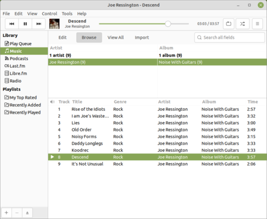

|  |
Take your music with you Ubuntu MATE comes with the amazing Rhythmbox music player. With advanced playback options, it's simple to queue up the perfect songs. And it works great with CDs and portable music players, so you can enjoy all your music wherever you go. If you prefer streaming services you'll find Spotify in the App Center. Included software Rhythmbox Music Player Celluloid |